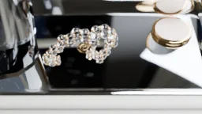
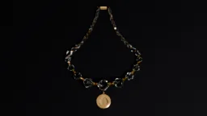
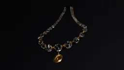
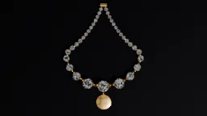
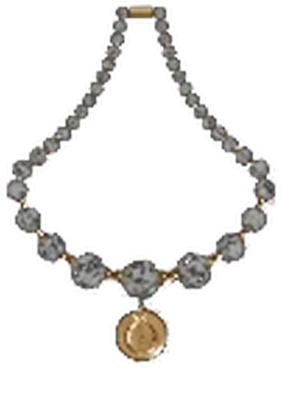
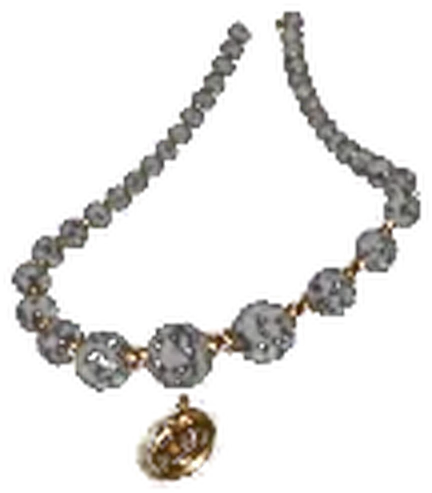
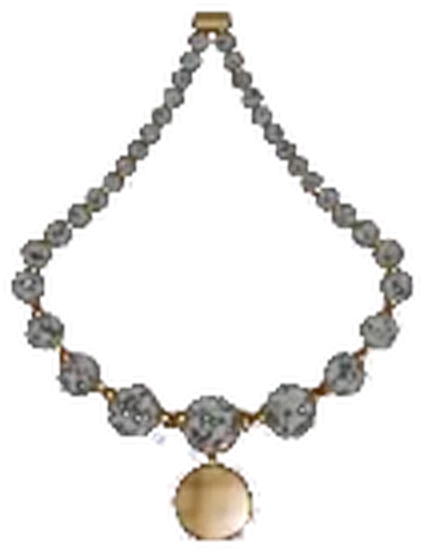
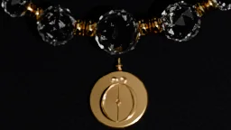

STAND-IN · img/lustre/hero/master.* (the director’s signature shot: On the black-glass tray beside the gold compact (story/product-stills/DIRECTOR-SHOTS.md; its 144p preview stands in); 8K, 7680 × 4320)Chapter I · Accessories
Lustre
Necklace

STAND-IN · img/lustre/front/master.* (the front, 16K render, once David passes its 1600 preview (stand-in: catalogue144 lustre_front_256x144.png; phones: lustre_front_108x144.png); 16K, 15360 × 8640)front

STAND-IN · img/lustre/three-quarter/master.* (three-quarter view, 8K (stand-in: catalogue144 lustre_threequarter_256x144.png; phones: _108x144); 8K, 7680 × 4320)three quarter

STAND-IN · img/lustre/back/master.* (back view, 8K (stand-in: catalogue144 lustre_back_256x144.png; phones: _108x144); 8K, 7680 × 4320)back
Chapter I
Lustre
Necklace
Named for the chandelier. Thirty-seven crystals of faceted rock crystal, largest at the centre, strung on 18k gold, and below them a gold disc with the Ö raised on it, a lab diamond at its centre.
- CRYSTALS
- FACETED ROCK CRYSTAL, 37
- GOLD
- 18K, POLISHED
- DISC
- 20.8 MM, THE Ö RAISED, A LAB DIAMOND
- LENGTH
- ABOUT 420 MM
Details
- Care
- Keep it in its pouch, apart from other pieces. Wipe with a soft dry cloth. Care
- Size
- The measurements
In its world
Lustre
CRYSTALSFACETED ROCK CRYSTAL, 37GOLD18K, POLISHEDDISC20.8 MM, THE Ö RAISED, A LAB DIAMONDLENGTHABOUT 420 MM


Where it is going
The vanity
The mirrored tray, the compact’s lid closing.
LENGTHABOUT 420 MMClasp to clasp. Laid flat, it closes in a teardrop.
CRYSTALSFACETED ROCK CRYSTALWater-clear, each a faceted round, drilled 1.0 mm: 16.0 mm at the centre, falling to 5.2 mm, then 5.0 mm behind the neck.
GOLD18K, POLISHEDBetween the larger crystals, two domed rondelles and a knife-edge washer; between the smaller, one rondelle. An 18k wire, 0.3 mm, through every bore.
DISC20.8 MMA satin field. The mark raised 0.35 mm and polished, a 1.6 mm princess diamond set on point at its middle, in four fine claws.
CLASP18K BOX CLASP9 by 5 by 4 mm.
BAILA TUBE BAIL2.4 mm wide, on a 2.5 mm jump ring.
In the world
Lustre
Necklace
The vanity
Scroll to walk around it
Close, at 100%

STAND-IN · img/lustre/detail-detail/master.* (the disc and the centre crystals, 8K close-up; 8K, 7680 × 4320)The disc and the centre crystals
 STAND-IN · img/lustre/detail-shadow/master.* (its shadow in the projector’s beam, 8K close-up; 8K, 7680 × 4320)
STAND-IN · img/lustre/detail-shadow/master.* (its shadow in the projector’s beam, 8K close-up; 8K, 7680 × 4320)Its shadow in the projector’s beam